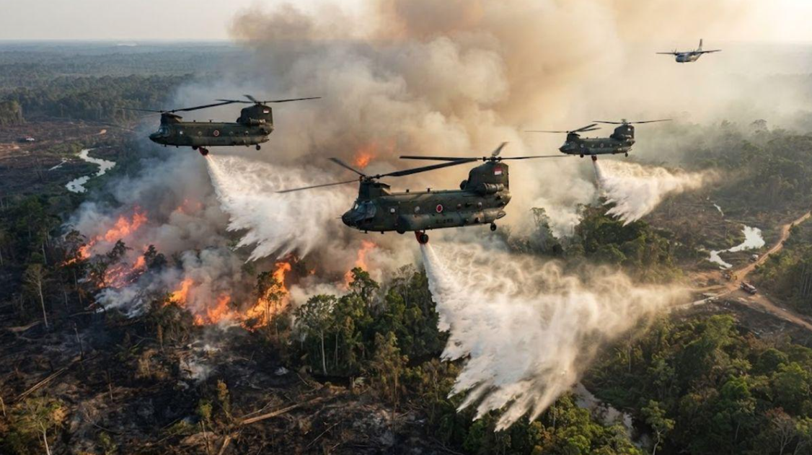

Setiap rupiah penanganan kebakaran hutan
bisa kamu periksa.
Lihat ke mana dana mengalir, buka bukti kerja di lapangan, dan laporkan titik api atau dugaan penyelewengan anggaran secara real-time.
Sistem Keuangan Terbuka
Catatan resmi Laporan Keuangan Pemerintah Pusat Tahun 2025 Audited dari Kementerian Keuangan.
Buku Kas Publik Digital (APBN 2025)
Dashboard Visualisasi Alokasi & Penyerapan Dana
Grafik transparan penanganan karhutla yang terhubung langsung ke file data anggaran.
Pos Transaksi LKPP 2025
Rincian Uang Masuk
Audited-
Pendapatan Perpajakan LKPP 2025 AuditedRp 2.218,17 T
-
PNBP (Penerimaan Negara Bukan Pajak) LKPP 2025 AuditedRp 541,53 T
-
Penerimaan Hibah LKPP 2025 AuditedRp 5,43 T
Rincian Uang Keluar
Audited-
Belanja Pemerintah Pusat LKPP 2025 AuditedRp 2.586,42 T
-
Transfer ke Daerah LKPP 2025 AuditedRp 849,04 T
-
Pembiayaan Neto LKPP 2025 AuditedRp 742,73 T
Dokumentasi Lapangan & Ekologis
Bukti atas kesulitan dan perjuangan kita semua.

Posko Lapangan Tanggap Darurat

Upaya Pemadaman Kebakaran Hutan

Bantuan Pemadaman dari Jepang
Simulasi Peta Peringatan Dini (Early Warning System)
Integrasi pemantauan titik panas (hotspot) berbasis satelit interaktif berukuran besar dengan kalkulasi jarak presisi (Haversine Formula) ke lokasi pengguna.
Peta Pemantauan Hotspot Interaktif (Leaflet.js)
Pantau lokasi titik panas satelit secara visual pada peta area luas
Pengaturan Pemantauan & Telemetri Lahan
Tekan tombol di bawah untuk menghitung jarak real-time dari posisi GPS Anda ke titik panas terdekat dengan **Rumus Haversine**.
Peringatan Dini Terkirim (Live Feed)
Multi-Channel[WARNING] Satelit VIIRS deteksi 4 hotspot di Pulang Pisau. Jarak: 14.2 km dari Posko Utama.
Peringatan peningkatan suhu gambut di Bengkalis (Riau). Tim regu darat disiagakan.
Daftar Notifikasi Dini Zona Saya
Ruang Partisipasi Rakyat
Unggah aduan, titik api, atau indikasi kecurangan anggaran secara real-time. Setiap laporan warga wajib melalui proses verifikasi lapangan oleh Tim MPA (Masyarakat Peduli Api) & Admin.
Papan Laporan Warga
1 Terverifikasi • 1 Menunggu Verifikasi“Terlihat asap tebal membubung di perbatasan area gambut Desa Jabiren. Butuh pompa tambahan.”
“Peralatan pompa air posko desa 2 belum menerima bantuan selang baru sesuai alokasi APBN.”